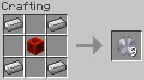
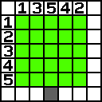
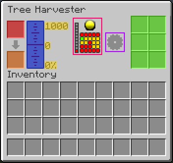

This mod adds a single lava powered machine, the tree harvester, which can automatically harvest all logs within its workable radius. In addition, it adds a single item, the saw blade, required by the Tree Harvester's recipe.
The Tree Harvester Saw Blade is composed of iron and redstone. By default, a redstone block and four iron ingots are required to produce nine saw blades. However, if an installed mod has added iron nuggets, then one saw blade can be produced with four iron nuggets and one redstone dust.
The Tree Harvester operates on an area in front of the machine block that is 5 blocks wide, 5 blocks long, and 10 blocks high. The machine works top to bottom, meaning higher logs will be harvested before lower logs. The harvesting of logs works from far to near, meaning that logs farther from the harvester will be gathered before closer logs. The Tree Harvester will collect in an alternating side to side manner, meaning that logs will be selected in the pattern of 13542, ie far left, far right, near left, near right, center.
The Tree Harvester is powered by lava and has a maximum capacity of one bucket (1000 mb). Every time a log is harvested, one millibucket of lava will be consumed. In addition to the internal lava tank (BLUE), there is a lava container input slot (RED), a lava container output slot (ORANGE), and six slots of internal harvested log storage (GREEN). The capacity, amount, and percentage filled values are displayed (YELLOW) to the right of the tank.
Information related to the Tree Harvester is displayed in the center of the screen. First is the current progress chopping the currently targeted log (PURPLE BOX). To the left of the progress indicator are the status and targeting indicators (PINK BOX). The status indicator (top right) will show red when their are no targetable logs, green if logs are being chopped, and yellow if there are targetable logs but the machine is disabled by an applied redstone current. The target level indicator (left) shows what level within the vertical workable zone is being targeted. The target grid (bottom right) represents the horizontal workable area on the current target level. Each square of the grid is colored based on its state: red if there is no choppable log, yellow if there is a choppable log, and green if there is a choppable log that is currently being targeted by the Tree Harvester.
Both the tank and all storage slots will be preserved when the harvester is destroyed and restored when the machine is placed back into the world.
